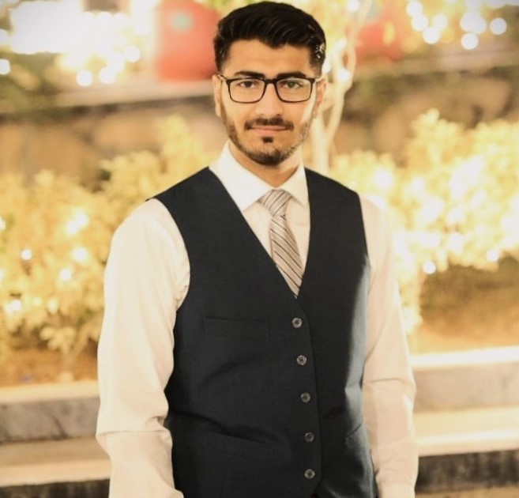

|  |
Student at UET Peshawar EducationUndergrad Computer Systems Engineering |
Degree in Computer System Engineering
University of Engineering and Technology Pehsawar | 2025
Front-End Intern
Digisthetics, June 2023 - September 2023
Machine Learning Intern
Coding Samurai, September 2023 - October 2023